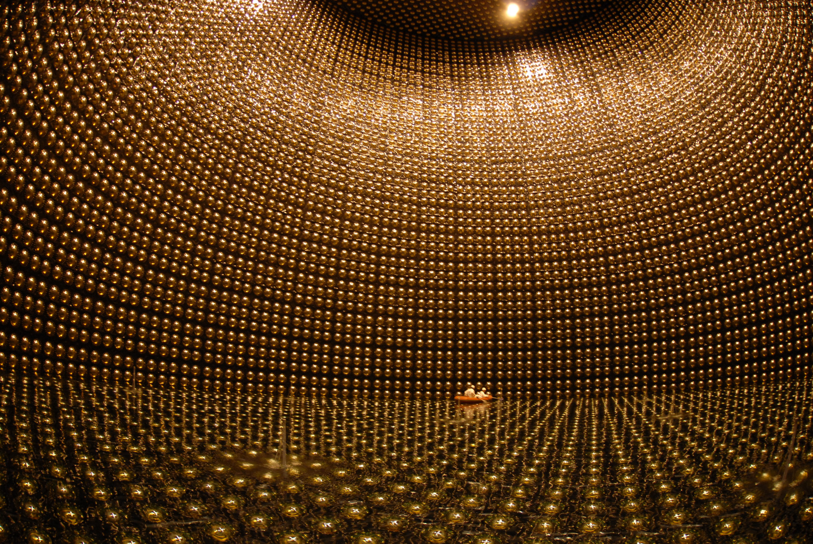

Neutrinos are extremely tiny "ghost" particles, even smaller than atoms, that leave the Sun's core to reach the Earth. These particles have 3 identities and change their identities along their path to the earth, making it really hard for scientist to study their charecteristics. After 96 years of sheer determination, scientists have finally uncovered the secret of these tiny particles!
